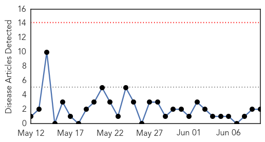

Influenza
30-Day Web Trend
0 alerts, 0 warnings

30-Day Twitter Trend
0 alerts, 0 warnings

Article Locations

Article Confidences

Top Articles:
Top Tweets:
- 0.749
- CRS report on federal disaster response assets; @WHO updates on H7N9 influenza & ebola outbreaks. HealthSecurity http://t.co/H1JhGCUg02
MERS
30-Day Web Trend
0 alerts, 0 warnings
30-Day Twitter Trend
1 alerts, 0 warnings
Article Locations
Article Confidences

Top Articles:
- 0.999
- The Voice of Russia: News, Breaking news, Politics, Economics, Business, Russia, International current events, Expert opinion, podcasts, Video
- 0.993
- Report on Tunisian MERS cases shows testing challenges
- 0.989
- Issuance of health alert cards,monitoring of travellers suggested
- 0.967
- WHO concludes mission to investigate MERS-CoV risk in UAE
- 0.964
- Algeria reports 1st coronavirus fatality
- 0.846
- Coronavirus: WHO gives thumbs up to Saudi effortsHealthcare
- 0.721
- Despite MERS fears, 10% rise in pilgrims
Top Tweets:
-
No tweets found for Jun 10, 2014